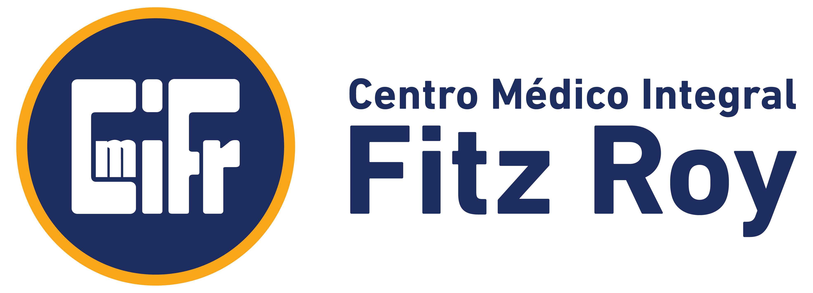
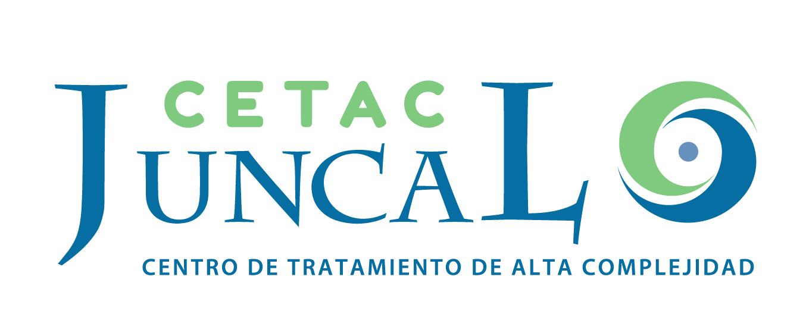
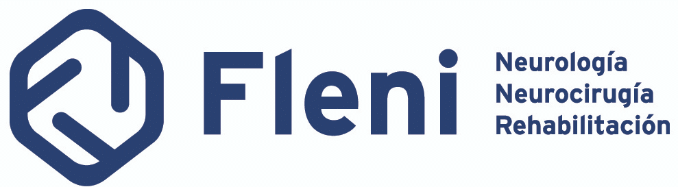
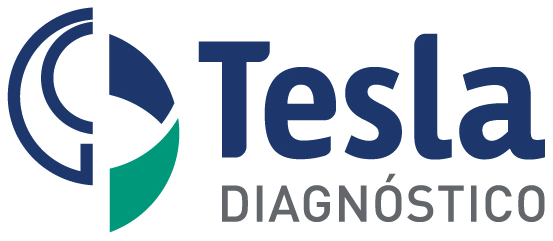

06 — EXPERIENCIA
Algunas marcas de salud que ya confían en Popcorn.
Producimos comunicación y contenido para instituciones líderes del sistema de salud argentino. Conocemos el lenguaje del paciente, del médico y de la institución.






+ tu institución